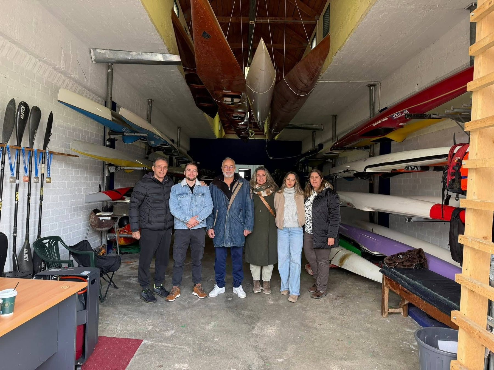
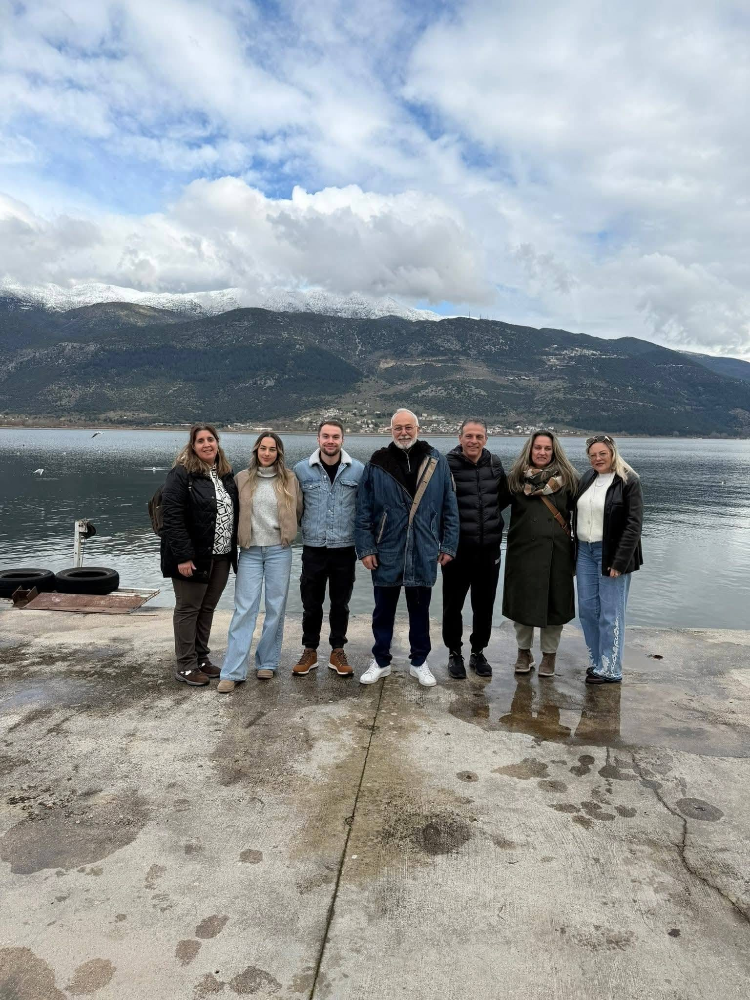
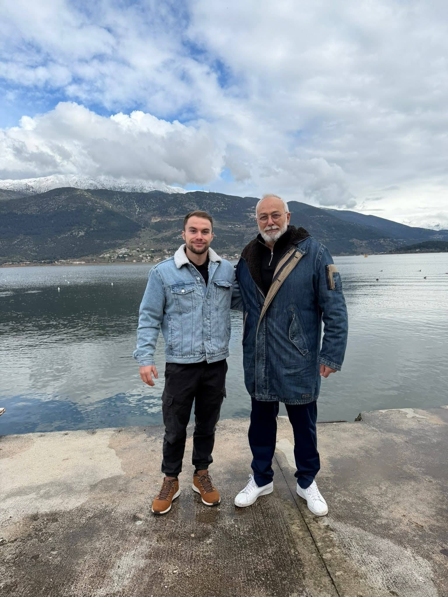

ΑΝΑΚΟΙΝΩΣΗ • 2026
Επίσκεψη της Ε.Ο.Κ.-Κ. στον Ν.Ο. Παμβώτιδος
Συνάντηση για την ανάπτυξη του αθλήματος και το μέλλον της Παμβώτιδας ως προπονητικού κέντρου.
Συνεργασία για την ανάπτυξη του Κανόε-Καγιάκ
Την Κυριακή 1 Φεβρουαρίου, ο Πρόεδρος της Ε.Ο.Κ.-Κ. κ. Γιώργος Αθανασίου επισκέφθηκε τα Ιωάννινα και συναντήθηκε με τον προπονητή του Ναυτικού Ομίλου Παμβώτιδος, κ. Παναγιώτη Αντωνίου.
Η συζήτηση επικεντρώθηκε στην αναπτυξιακή πορεία και τις προοπτικές του σωματείου, με έμφαση στην αύξηση της συμμετοχής αθλητών/τριών και στην επανενεργοποίηση του αθλήματος στη λίμνη των Ιωαννίνων.
Κατά την επίσκεψη πραγματοποιήθηκε περιήγηση στις αθλητικές εγκαταστάσεις του ΠΕΑΚΙ, όπου στεγάζεται ο ΝΟΠ, με ιδιαίτερη αναφορά στη σημασία της Παμβώτιδας ως χώρου που έχει φιλοξενήσει σημαντικούς αγώνες και μπορεί να υποστηρίξει ξανά διοργανώσεις υψηλού επιπέδου.


